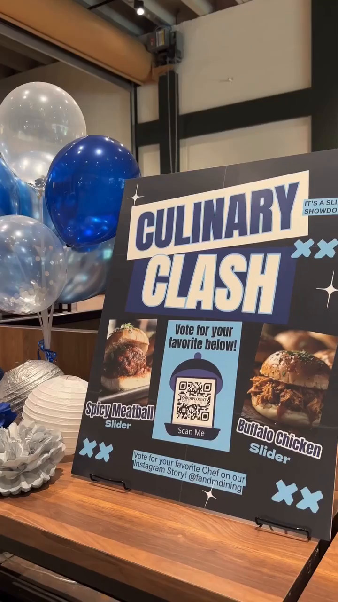

SOCIAL MEDIA · CONTENT STRATEGY · COMMUNITY · CAMPAIGNS
Social Media & Content Strategy
Creating content people have a reason to engage with.
A selection of social-first work spanning audience engagement, organic growth, brand storytelling, event marketing, community participation, educational content, and integrated campaigns.
OVERVIEW
Social is a channel, not the strategy.
My approach to social media begins with understanding what the audience should think, feel, learn, or do after seeing the content.
Across hospitality, campus marketing, startup development, and community-driven projects, I have used social media to promote events, test ideas, build brand identity, educate audiences, encourage participation, and connect digital engagement with real-world action.
The creative format changes by campaign, but the goal remains consistent: give the audience a reason to care and a clear reason to respond.
CAPABILITIES
Strategy
Campaign planning, content pillars, audience segmentation, channel strategy, and engagement mechanics.
Content
Social graphics, short-form video, captions, educational content, promotional assets, and storytelling.
Community
Polls, voting, audience participation, comments, user feedback, and community-led brand building.
Measurement
Organic reach, engagement, participation, campaign outcomes, conversions, and qualitative audience response.
01 · COMMUNITY-LED CONTENT
Turning audiences into participants.
The Approach
Some of my strongest social campaigns were designed around participation rather than passive consumption.
Instead of simply announcing decisions, I created opportunities for audiences to help shape campaigns, vote, contribute ideas, and become part of the brand experience.
Example: Ele Winks
For F&M Diplomat Dining, I developed a multi-stage social campaign that asked students to first select a dining mascot and then help choose its name.
The resulting mascot, Ele Winks, became an ongoing element of social content and campus activations rather than a one-time post.
02 · EVENT & CAMPAIGN CONTENT
Moving people from the feed to the experience.
Digital + Physical
Social content often served as the first touchpoint for campaigns that ultimately happened in physical spaces.
Promotional posts were connected with signage, events, contests, culinary experiences, and in-person participation.
Campaign Examples
Flapjack Fest, Culinary Clash, Stop Hunger initiatives, food holidays, cultural dining experiences, and other campus activations used social media as part of a broader engagement strategy.


03 · EDUCATIONAL CONTENT
Making useful information worth stopping for.
Content With Utility
Not every post needs to sell something. Educational content can build trust, create relevance, and give audiences a reason to return.
Across Projects
My educational work has ranged from nutrition and dining information to historical food storytelling and relocation guidance for people moving to South Korea.

04 · ORGANIC GROWTH
Using content as a validation channel.
Jeong Stay
Before launching a complete product, I used short-form social content to test whether relocation-focused information could attract organic interest from the intended audience.
The Result
The first 16 TikTok posts generated more than 12,000 organic views, providing an early signal that content could serve as both an audience-validation tool and an acquisition channel.
CONTENT PROCESS
From idea to interaction.
Audience
Identify who the content is for and what matters to them.
Objective
Define whether the goal is awareness, education, participation, conversion, or retention.
Concept
Develop the campaign idea, hook, story, and creative direction.
Create
Produce platform-appropriate visuals, video, copy, and calls to action.
Activate
Publish, engage, connect channels, and support the larger campaign.
Learn
Evaluate response and use performance or audience feedback to guide what comes next.